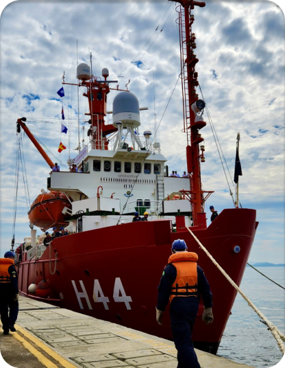

Tecnologia e Pesquisas Marinhas

A exploração, monitorização e exploração do meio marinho requer uma instrumentação de alta tecnologia. Desde a medição das propriedades físicas e químicas dos oceanos até à amostragem, os equipamentos estão a tornar-se cada vez mais sofisticados. Os novos meios de investigação estão constantemente a influenciar os diferentes sectores da investigação oceanográfica e os cientistas estão a passar da observação para a modelização, o que requer novos sistemas de medição.
Tecnologias marinhas como navios, dispositivos subaquáticos e vários instrumentos apoiam disciplinas científicas como geociências, biologia marinha e química, e oceanografia física.